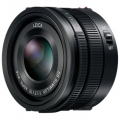

器材库 > APS画幅镜头 > Leica DG Summilux 15/1.7 ASPH

详细规格
发布日期
2014-03-24
焦距
15mm
等效35mm画幅焦距
30mm
最大光圈
f/1.7
最小光圈
f/16
镜头结构
9片/7组
非球面镜片
3片
最近对焦距离
20cm
最大放大倍率
0.1
滤镜口径
46mm
镜头卡口
Micro 4/3
防抖
否
颜色
黑色
尺寸
58×36mm
重量
115g
笨笨小兔子2017-09-23 12:094.42 分
操作性 4.50耐用性 4.50性价比 4.00解像力 4.50色彩还原 4.50机械结构 4.50
angoeng2015-02-01 11:014.83 分
操作性 5.00耐用性 5.00性价比 4.50解像力 5.00色彩还原 4.50机械结构 5.00
产品图 / 样片
松下 Leica DG Summilux 15/1.7 ASPH
评测 / 相关文章
- 详细内容 （存档）
- ［试用］松徕DG 15mm大战松下“煎饼”镜头 （存档）
- ［试用］我的M43小巧定焦视界 （存档）
- ［试用］Leica DG Summilux 15/1.7 ASPH入手试拍 （存档）